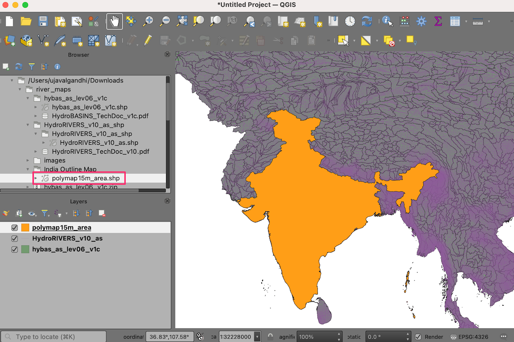
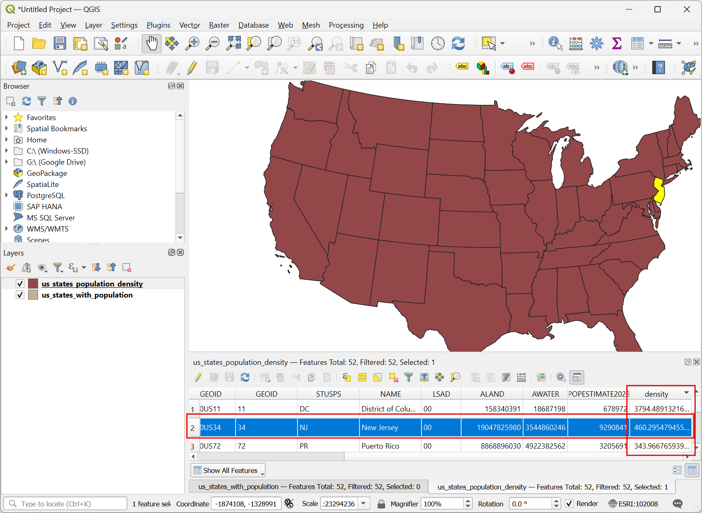

استفاده از بیان توابع عبارتی پایتون (QGIS3)¶
عبارات در QGIS قدرت زیادی دارند و در بسیاری از عارضه های اصلی ازقبیل : انتخاب ، محاسبه مقادیر فیلد ،نمایش قالب ، برچسب گذاری و غیره QGIS مورد استفاده قرار می گیرند همچنینQGIS از عبارات تعریف شده توسط کاربر پشتیبانی می کند. با کمی برنامه نویسی پایتون ، می توانید توابع خود در موتور عبارت تعریف کنید.
نمای کلی تمرین¶
ما یک تابع سفارشی را تعریف خواهیم کرد که عدد زون UTM یک عارضه در نقشه UTM zone number را پیدا کند و با استفاده از این تابع عبارتی، وقتی روی نقطه قرار گرفتید عدد منطقه UTM نمایش داده شود.
مهارت های دیگری که خواهید آموخت¶
نحوه استفاده از ابزار
Map Tipsبرای نمایش متن سفارشی هنگام قرار دادن روی عارضه.
اخذ داده¶
ما از مجموعه داده مکانی وبگاه Populated Places استفاده خواهیم کرد. مجموعه داده های ساده شده (با ستون کمتر) <http://www.naturalearthdata.com/http//www.naturalearthdata.com/download/10m/cultural/ne_10m_populated_places_simple.zip>`__ را دونلود نمایید.
مراحل¶
فایل
ne_10m_populated_places_simple.zipرا در QGIS Browser پیدا کرده و آن را باز دهید. فایلne_10m_populated_places_simple.shpرا انتخاب کرده و به پنجره اصلی بکشید.

به منوی بروید یا دکمه Select features using an expression برای انتخاب عارضه ها با استفاده از عبارت در ابزار Attributes Toolbar. کلیک کنید.

در کادر محاوره ای Select by Expression ، به تب:guilabel:Function Editor بروید. در اینجا می توانید کد PyQGIS بنویسید که توسط موتور عبارت اجرا می شود.

ما یک تابع به نام "GetUtmZone" تعریف خواهیم کرد که شماره منطقه UTM را برای هر عارضه محاسبه می کند. از آنجا که توابع سفارشی در QGIS در سطح عارضه کار می کنند. ما از مرکز هندسه عارضه استفاده خواهیم کرد و منطقه UTM را از عرض و طول هندسه مرکز محاسبه خواهیم کرد. همچنین برای تعیین وجود منطقه در نیمکره شمالی یا جنوبی ، حرف 'N' یا 'S' به منطقه اضافه خواهیم کرد. دکمه +`را در پایین سمت چپ صفحه فشار دهید ونام ``utm_zones.py` را به عنوان فایل خروجی تایپ کنید. جهت بستن راهنما، بر روی برچسب Help در پانل پایین کلیک کنید. پانل کد را باز کنید.

زون UTM پروژکشن بر حسب طول جغرافیایی تعیین می شود که از 1 تا 60 شماره گذاری شده اند. هر زون UTM به مقدار 6 درجه است. در اینجا ما از یک فرمول ساده ریاضی برای پیدا کردن منطقه مناسب برای یک مقدار طول مشخص استفاده می کنیم. این فرمول برای همه به جز چند منطقه ویژه https://en.wikipedia.org/wiki/Universal_Transverse_Mercator_coordinate_system#Exceptions>`_ درست عمل می کند. کد زیر را در پنجره ویرایشگر تایپ کنید. پس از اتمام کار ، بر دکمه Save and Load Functions. کلیک کنید تا کد ذخیره و بارگذاری شود
import math from qgis.core import * from qgis.gui import * @qgsfunction(args=0, group='Custom', usesgeometry=True) def GetUtmZone(value1, feature, parent): """Return the UTM Zone of the feature's geometry as a String""" centroid = feature.geometry() longitude = centroid.asPoint().x() latitude = centroid.asPoint().y() zone_number = math.floor(((longitude + 180) / 6) % 60) + 1 if latitude >= 0: zone_letter = 'N' else: zone_letter = 'S' return '%d%s' % (int(zone_number), zone_letter)

توجه
در حال حاضر هیچ راهی برای حذف یک فایل عبارت از GUI وجود ندارد. اگر می خواهید فایل "utm_zone.py" را حذف کنید ، می توانید به منوی بروید و فایل را از پاک کنید.
در کادر محاوره ای انتخاب با عبارت به تب Expression بروید. گروه: guilabel: Custom را در بخش توابع پیدا و باز کنید. شما یک تابع جدید``GetUtmZone`` را در لیست مشاهده خواهید کرد. اکنون می توانیم از این تابع دقیقاً مانند سایر توابع استفاده کنیم. عبارت زیر را در ویرایشگر تایپ کنید. این عبارت تمام نقاطی را که در زون 33N` پر.ژکشن UTM قرار می گیرند انتخاب می کند. جهت بزرگنمایی عارضه ها Zoom to Features کلیک کنید. اگر روی نقشه کلیک کنید تغییر می کند Select Features را انتخاب کنید باید ببینید نقاط موجود در منطقه UTM 33N به زرد تغییر رنگ می دهند.
GetUtmZone() = '33N'
توجه
به دلیل اشکال ، این تابع در نسخه های قبلی QGIS 3 کار نمی کند. این مشکل، از نسخه 3.4.5 به بعد برطرف شده است.
به پنجره اصلی QGIS برگردید ، باید برخی نقاط با رنگ زرد مشاهده می کنید. اینها نقاطی هستند که در زون UTM قرار می گیرند و ما در عبارت مشخص کردیم.

شما دیدید که چگونه یک تابع را برای انتخاب عارضه ها توسط عبارت تعریف و استفاده کردیم. اکنون از همین تابع در جای دیگری استفاده خواهیم کرد. یکی از ابزارهای مهم پنهان در QGIS ابزار**Map Tip** است. این ابزار هنگامی که بر روی یک عارضه حرکت می کنید متن تعریف شده توسط کاربر را نشان می دهد. روی لایه``ne_10m_populated_places_simple`` راست کلیک کرده و گزینه Properties را انتخاب کنید.

به تب Display بروید. در اینجا می توانید هر متنی را وارد کنید که وقتی روی عارضه های لایه می روید. حتی ، می توانید از مقادیر و اصطلاحات فیلد لایه برای تعریف یک پیام بسیار مفیدتر استفاده کنید. روی دکمه Ɛ کلیک کنید.

ویرایشگر عبارت را دوباره خواهید دید. ما تابع concat استفاده خواهیم کرد تا نتایح تابع
GetUtmZoneبه ستونnameافزوده شود . عبارت زیر را وارد کرده و عبارت OK کلیک کنید.concat("name",' | UTM Zone: ', GetUtmZone())

عبارت وارد شده را به عنوان مقدار متن نمایش مشاهده خواهید کرد. Insert را کلیک کنید تا آن را به جعبه HTML اضافه کنید و سپس :guilabel:`OK`را فشار دهید.

قبل از ادامه کار ، اجازه دهید عارضه هایی را که در مرحله قبل انتخاب شده اند ، لغو کنیم . برای لغو انتخاب عارضه های لایه ها" به منوی برویید. یا روی دکمه "لغو انتخاب Deselect Features From All Layers کلیک کنید.

ابزار "Map Tips" را با رفتن به منوی:menuselection:View --> Map Tips یا کلیک بر روی دکمه Show Map Tips ابزار در :guilabel:`Attributes Toolbar فعال کنید.

به هر منطقه از نقشه بزرگنمایی کرده و نشانگر موس را روی هر عارضه قرار دهید. نام شهر و زون UTM مربوطه در کادر نمایش مشاهده خواهید کرد.